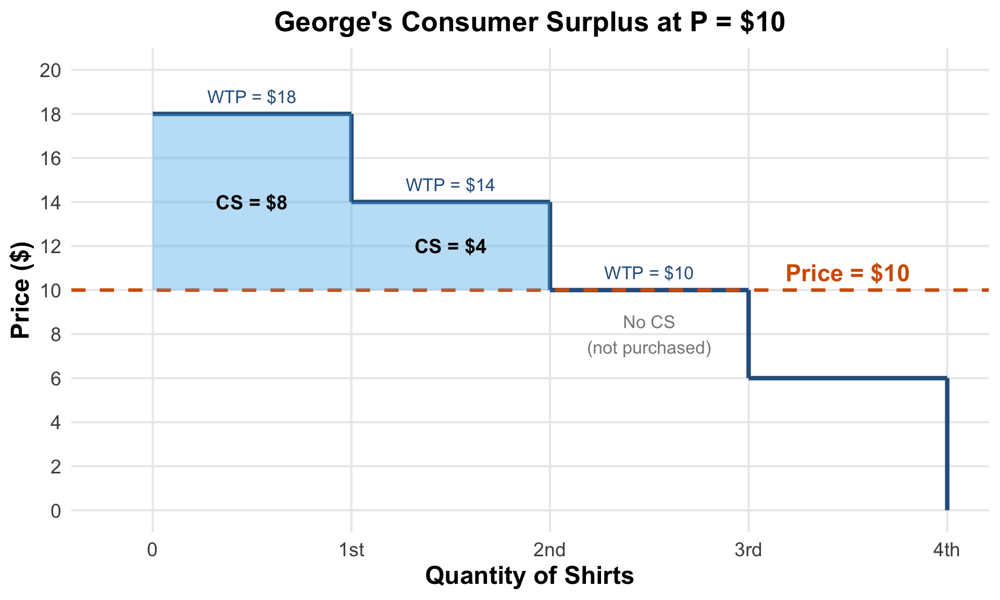
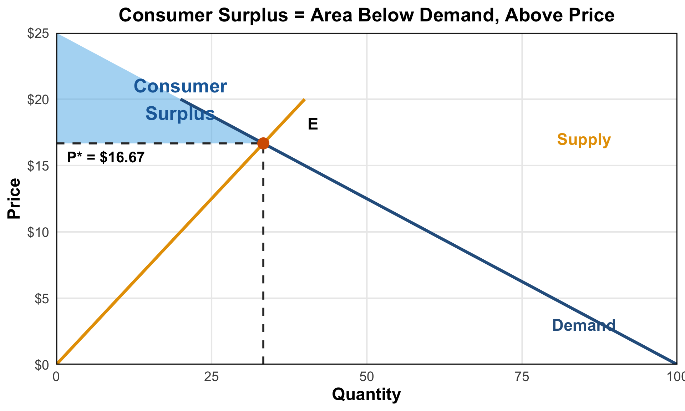
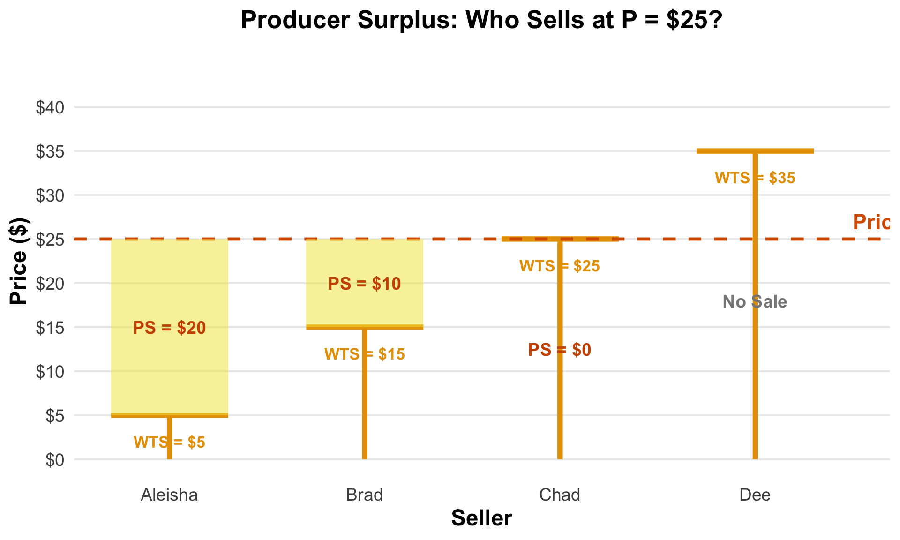
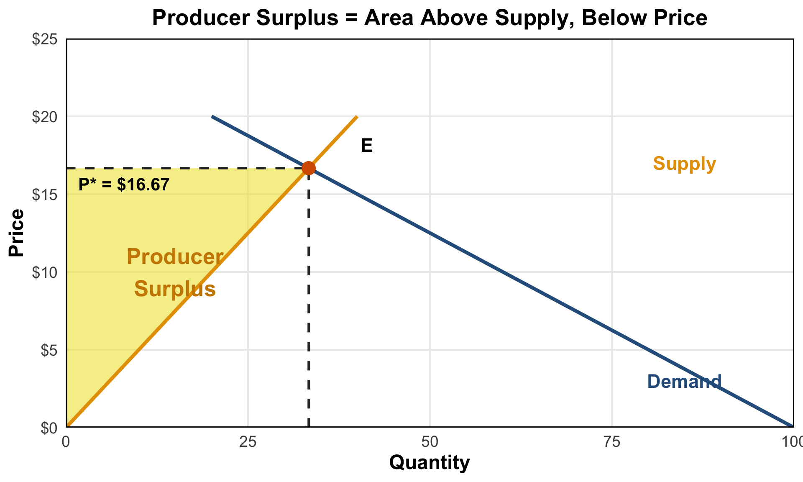
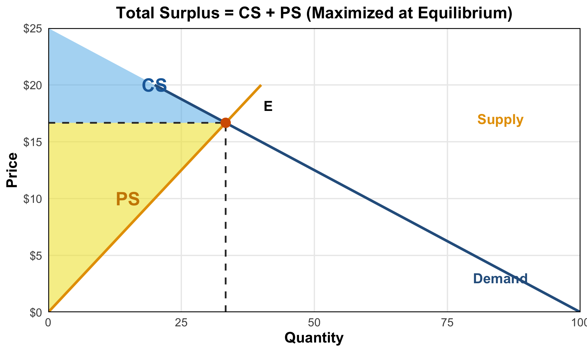
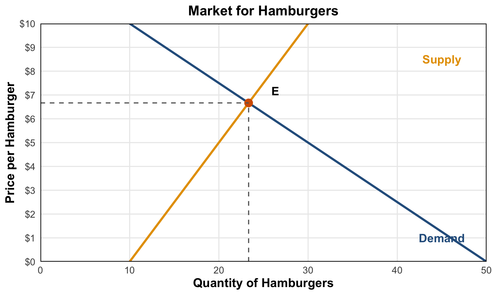
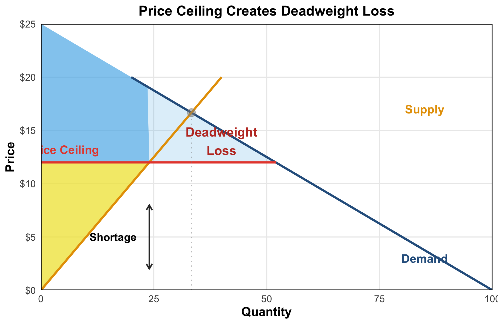
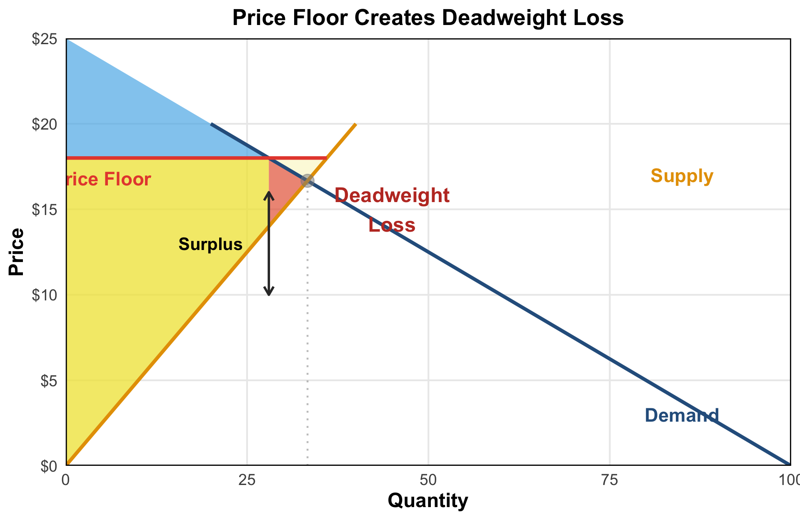
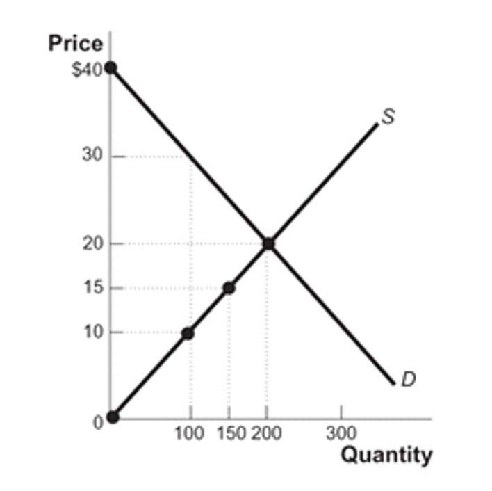

ECON 1450 - Principles of Microeconomics
By the end of this chapter, you will be able to:
Consumer Surplus (CS) = Willingness to Pay - Price Paid
The difference between what consumers are willing to pay and what they actually pay
Example: If you’re willing to pay $50 for a concert ticket but only pay $30:

George buys 2 shirts at $10 each

Consumer Surplus = Green shaded area
Sum of all individual CS for every unit purchased
Producer Surplus (PS) = Price Received - Willingness to Sell
The difference between what producers receive and the minimum they would accept
Example: If you’re willing to sell a used textbook for $20 but receive $35:

At P = $25, three sellers participate:

Producer Surplus = Yellow shaded area
Sum of all individual PS for every unit sold
Total Surplus (TS) = Consumer Surplus + Producer Surplus
Measures the total net benefit from trade in a market


Question: At equilibrium, what is the consumer surplus?
Answer: Area of the triangle above P* and below demand curve
CS = ½ × base × height = ½ × 23.3 × (12.5 - 6.67) ≈ $68
When government sets prices away from equilibrium:
Price Ceiling (below equilibrium)
Price Floor (above equilibrium)
Key Insight
Any price different from equilibrium reduces total surplus and creates deadweight loss


Three Conditions for Market Efficiency
Allocative Efficiency: Goods go to buyers who value them most (highest WTP)
Productive Efficiency: Goods produced by sellers with lowest costs (lowest WTS)
Equilibrium: Supply equals demand (P* where S = D)
At equilibrium:
When do markets fail to maximize total surplus?
Dynamic Pricing = Market Equilibrium in Action
Normal Times: - P = $10 - Supply = Demand - No surge
High Demand Times: - Demand increases - Shortage at P = $10 - Surge pricing (P = $25) - More drivers enter - Market clears
Why does Uber do this?

You bought this for $15 at a thrift store. You see it’s selling on eBay for $60.
What is your consumer surplus?
Answer: CS = WTP - Price = $60 - $15 = $45
You would have been willing to pay up to $60 (its market value), but only paid $15!
George wants to buy shirts for work. His willingness to pay: - 1st shirt: $35 - 2nd shirt: $25 - 3rd shirt: $15
Price at Oxford & Co: $28 each
What is the efficient number of shirts for George to buy?
Answer: b) 1 shirt
Only the 1st shirt has WTP ($35) > Price ($28)
George buys 1 shirt at $28
What is George’s consumer surplus?
Answer: b) $7
CS = WTP - Price = $35 - $28 = $7
Mark and Rasheed are buying graphing calculators for Math 19.
What is their total consumer surplus?
Answer: c) $45
Four students selling textbooks to the bookstore at P = $25
| Seller | Willingness to Sell |
|---|---|
| Aleisha | $5 |
| Brad | $15 |
| Daya | $22 |
| Red | $30 |
How many students will sell their textbooks?
Answer: d) 3 students
Aleisha, Brad, and Daya all have WTS ≤ $25
Red’s WTS ($30) > Price, so Red won’t sell
The Scenario
“The sky is dumping freezing rain, it’s 11:30 at night, and you’re standing on a street corner 15 miles from home. You open your Uber app and see that the trip is going to cost you roughly $50, as prices are surging 200 percent above normal. But you summon the car anyways. In fact, you might not have hesitated to go as high as $100, just to get dry in that comprising moment.”
— Laura Bliss, Bloomberg, September 15, 2016
What is your consumer surplus?
Answer: CS = WTP - Price = $100 - $50 = $50
Traditional taxi system: - Fixed prices (meter rates) - Limited supply - During high demand → shortages (can’t find a cab!)
Uber’s dynamic pricing: - Prices rise when demand increases - Higher prices attract more drivers - Market clears → no shortage - Allocates rides to those who value them most
Economic Insight
Surge pricing eliminates deadweight loss by allowing the market to reach equilibrium, even during demand spikes
Why economists love Uber’s data:
Consumer surplus estimate: Americans would pay an extra $7 billion for Uber beyond what they actually pay!
Market for octopus candle holders: - Equilibrium: P = $20, Q = 200 - Demand intercept: $40 - Supply intercept: $0
What is producer surplus at equilibrium?
Answer: b) $2,000
PS = ½ × base × height = ½ × 200 × ($20 - $0) = $2,000
What is total surplus at equilibrium?
Answer: c) $4,000
Amazon imposes a price ceiling at $15
What is the new producer surplus?
Answer: a) $1,125
At P = $15: Q_supplied = 150
PS = ½ × 150 × ($15 - $0) = $1,125
(Note: Price ceiling reduces PS and creates deadweight loss!)
Property Rights: The rights of owners to use, sell, or benefit from their property as they choose
Economic Signals: Information (like prices) that helps people make better economic decisions
When property rights are clear and prices signal scarcity:
Monopoly power allows firms to: - Restrict output below efficient level - Charge prices above marginal cost - Reduce total surplus
. . .
When one party knows more: - Used car market (“lemons problem”) - Insurance markets (adverse selection) - Healthcare services - Can cause markets to collapse entirely
External costs or benefits not reflected in price:
Negative Externalities - Pollution - Traffic congestion - Secondhand smoke - Noise
→ Overproduction
Positive Externalities - Education - Vaccination - R&D - Beautiful gardens
→ Underproduction
Public Goods are: - Non-excludable: Can’t prevent non-payers from consuming - Non-rivalrous: One person’s consumption doesn’t reduce availability to others
. . .
Examples: - National defense - Lighthouses - Public parks - Clean air - Basic research
. . .
Problem: Free-rider incentive → private markets underprovide → government role
Consumer Surplus = WTP - Price (area below demand, above price)
Producer Surplus = Price - WTS (area above supply, below price)
Total Surplus = CS + PS (maximized at equilibrium)
Deadweight Loss = Lost surplus from prices away from equilibrium
Market Efficiency requires: - Competition - Complete information - No externalities - Private goods
Chapter 5: Elasticity
Coming Up
We’ll learn why a tax on luxury yachts hurts workers more than yacht buyers!